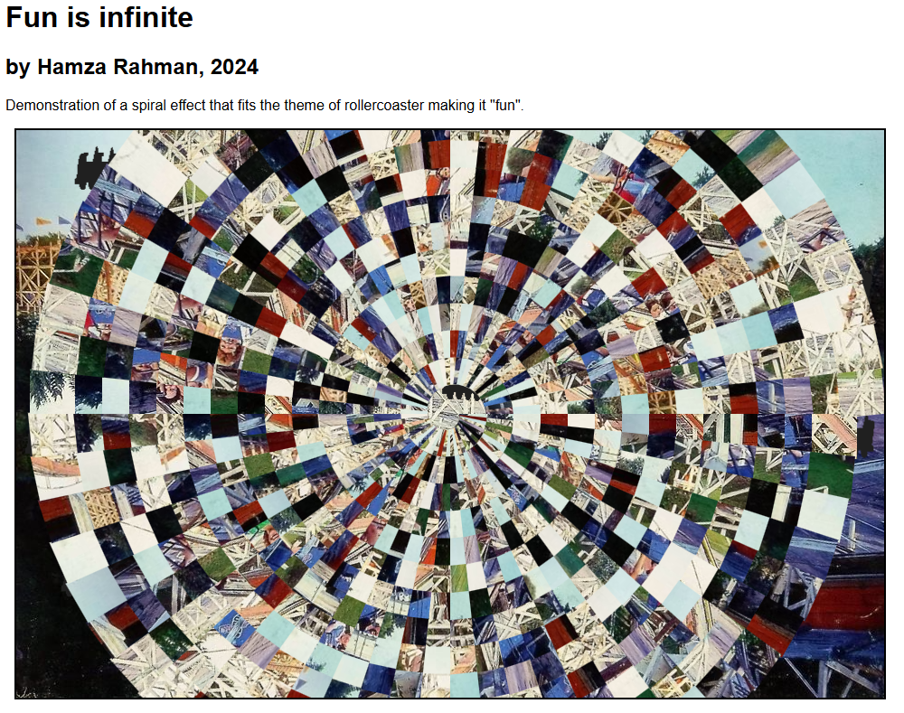

02 — MODULES & PROJECTS
Selected work
Max Slinger 2D
My first complete game — a 2D project that grew into the foundation for the 3D sequel I built in second year. It was the first time I took an idea from concept through to a playable, finished product, learning the loop of game logic, input handling and iteration along the way.

Designing Digital Interaction
An introduction to UI — how designers build interfaces for software and automated systems with a focus on aesthetics and clarity. Covered both graphical and non-graphical interfaces, including voice-controlled ones, with the goal of making interfaces intuitive and enjoyable.
Front-End Web
Hands-on experience in front-end design with HTML, CSS and JavaScript. Built interactive web pages and practiced accessibility-first development — the same skills that power this very portfolio.
Creative Computing · INPUT/OUTPUT
An original project on the theme of INPUT/OUTPUT — exploring how computational infrastructures, digital systems and the outside world communicate through code. My take: a sound-and-signals Asteroids riff that turned audio input into gameplay.

Graphics
Image manipulation for artistic purposes, image processing, 2D and 3D geometry for animation and interaction, and building rudimentary physics simulations — the visual and mathematical foundation behind the creative work that followed.
Identity, Environment & Agency
Understanding everything in the world as a kind of text — and learning the critical methodologies and theoretical perspectives needed to unpack it. The conceptual counterweight to the technical modules, useful far beyond coursework.
Introduction to Programming
Built with p5.js — a JavaScript-based environment designed for highly interactive rich-media apps from the start. The dev log here captures my first complete game project, where it all clicked for the first time.